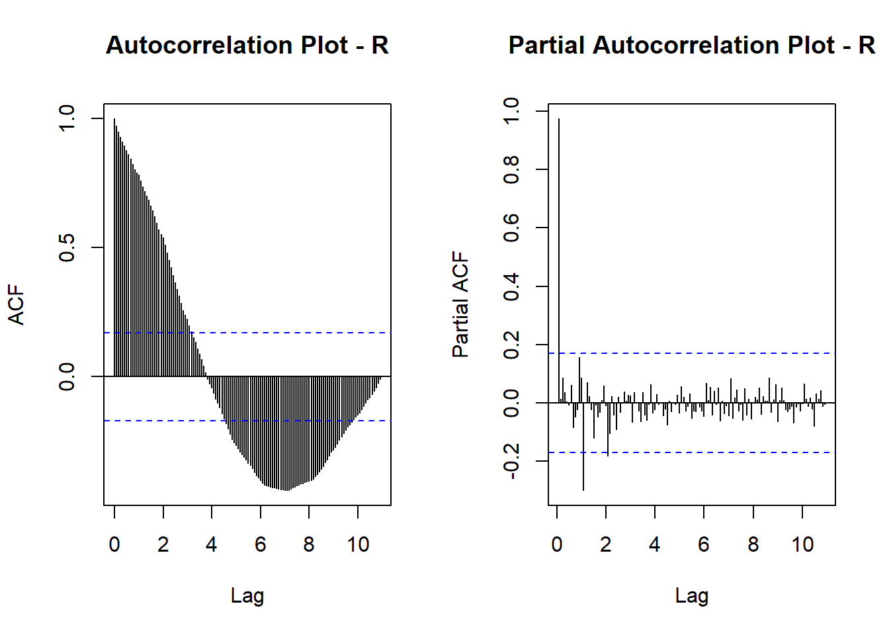
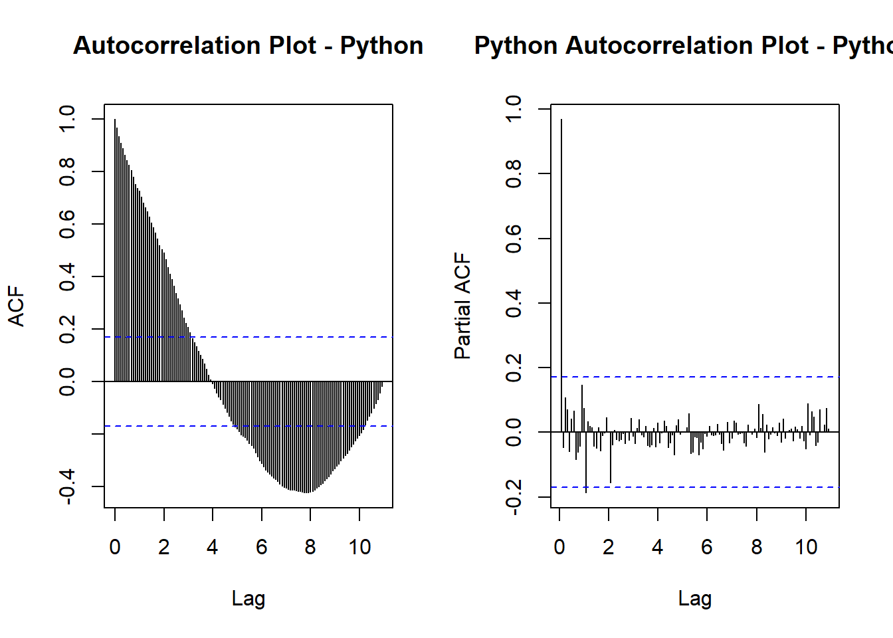
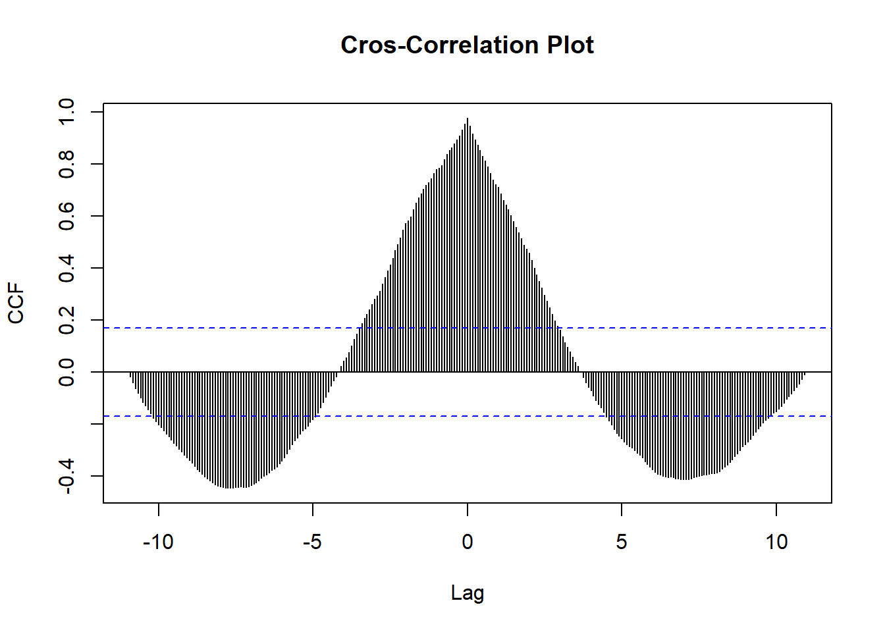
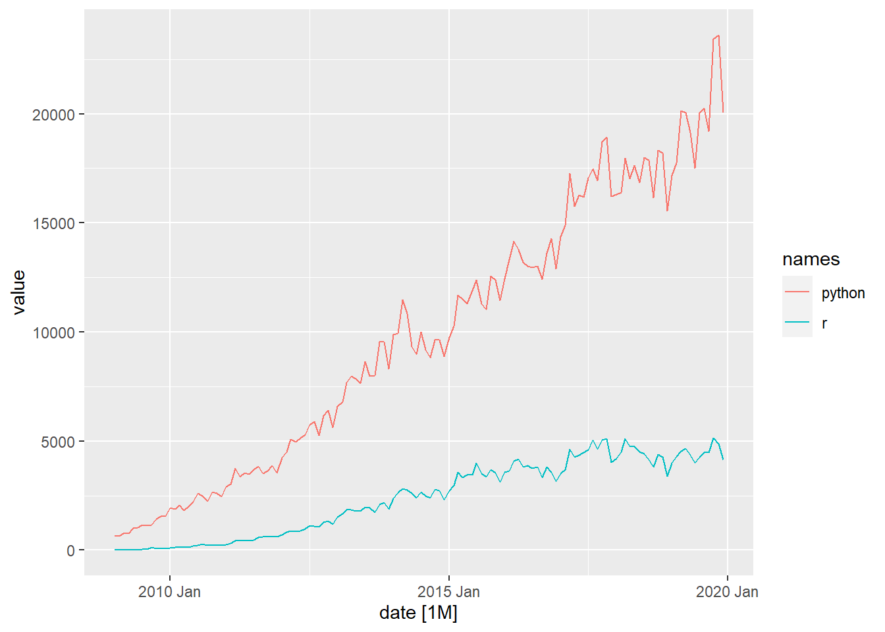
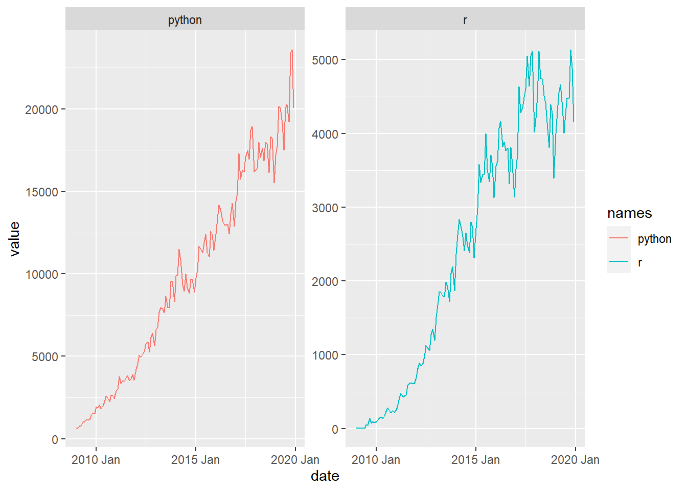
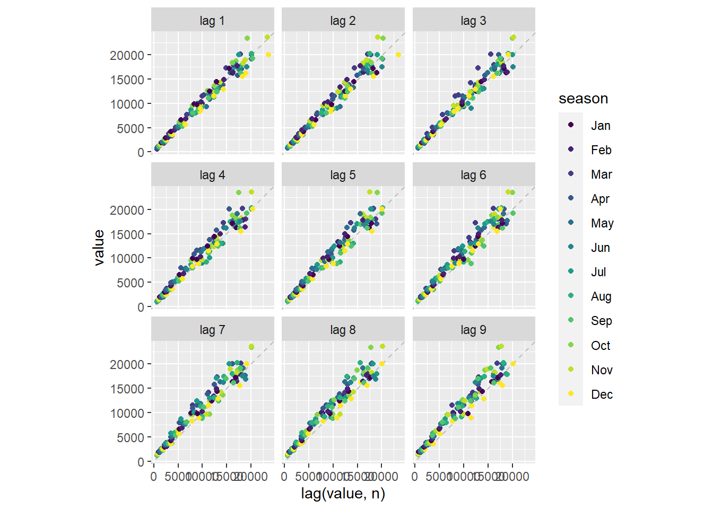
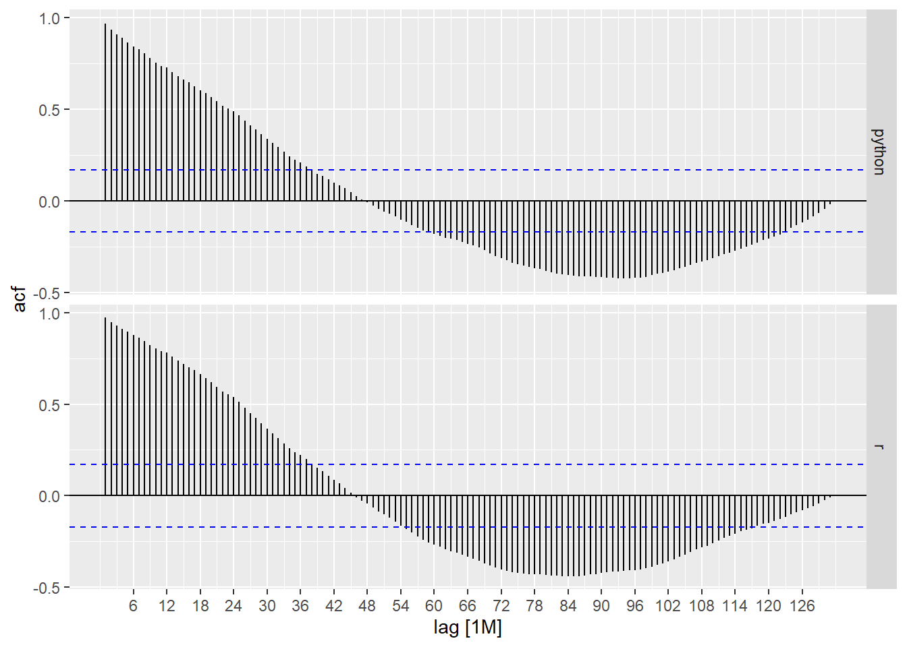
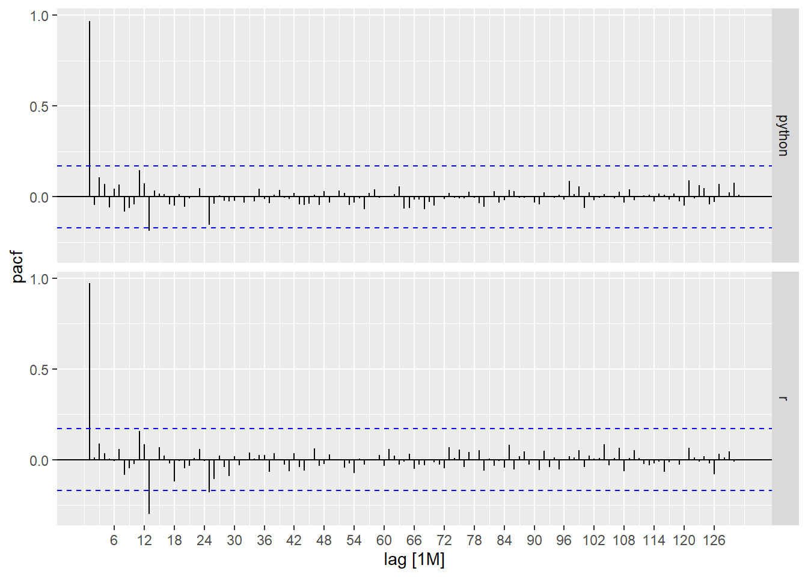
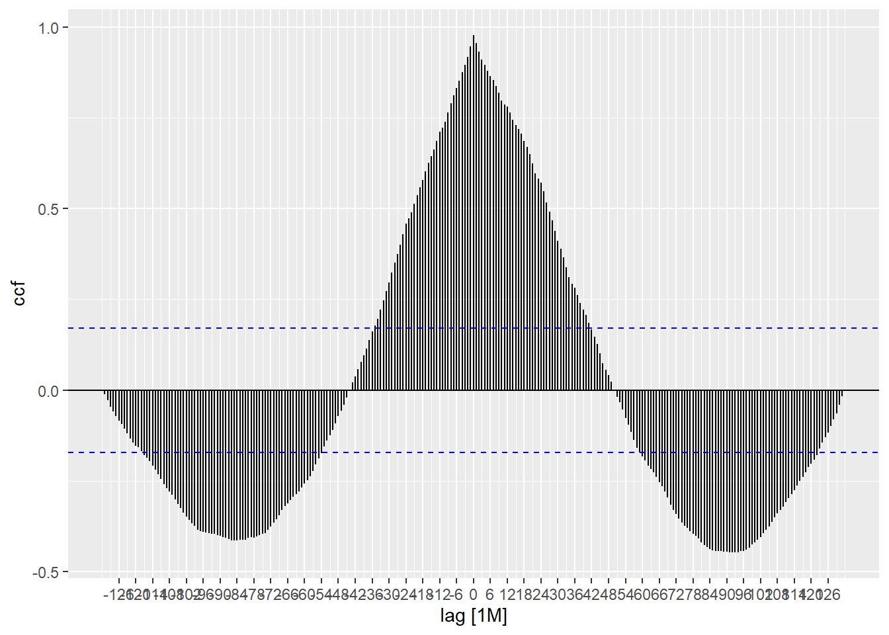

The first method that I want to show you use the ts object, a built-in format in R for time series. I choose this approach because with the ts object we have a good integration with TSstudio package and nice interactive functions to use.
ts_info(stackOverflow_ts)## The stackOverflow_ts series is a mts object with 2 variables and 132 observations
## Frequency: 12
## Start time: 2009 1
## End time: 2019 12ts_plot(stackOverflow_ts,
title = "Monthly questions on Stack Overflow platform",
Ytitle = "# Questions",
Xtitle = "Year")The time series doesn’t have a seasonal pattern, but it’s possible to see some cyclicality in both time series.
The TSstudio package doesn’t have any function to plot the ACF and PACF measures, and for that, we use the built-in functions acf and pacf. The downside here, for me, is that the object generated by these functions is not a ggplot2 object, and we lose all beautiful features from the grammar of graphics.
Obviously, you can go through the data and try to plot in the ggplot2 by yourself but will be a little burdensome.
For R time series:
par(mfrow = c(1, 2))
# acf R time series
stackOverflow_ts[, c("r")] %>%
acf(lag.max = 300,
main = "Autocorrelation Plot - R")
# pacf R time series
stackOverflow_ts[, c("r")] %>%
pacf(lag.max = 300,
main = "Partial Autocorrelation Plot - R")
For Python time series:
par(mfrow = c(1, 2))
# acf Python time series
stackOverflow_ts[, c("python")] %>%
acf(lag.max = 300,
main = "Autocorrelation Plot - Python")
# pacf Python time series
stackOverflow_ts[, c("python")] %>%
pacf(lag.max = 300,
main = "Python Autocorrelation Plot - Python")
In all graphics we have similar characteristics that need explanation:
Note that looking at ACF plots, both for R and Python time series, we have a greater correlation with more recent lags, which is lost over time. With more distant lags it is possible to see that we have a negative correlation with recent data.
The Partial Autocorrelation is a little different, this “partial” correlation between two variables is the amount of correlation between them which is not explained by their mutual correlations with a specified set of other variables.
For example, if we are regressing a variable Y on other variables X1, X2, and X3, the partial correlation between Y and X3 is the amount of correlation between Y and X3 that is not explained by their common correlations with X1 and X2.
To summarize, when we look at the PACF plot, we want to know each lag that has relevant information to use as a predictor in a future forecast. How much greater the PACF score, the better.
And, in our plots, we see that both time series have one lag (closer to lag 1) that may be useful.
Just know which correlation score has the higher score is not enough, it’s important to see visually how these points are distributed. In that, TSstudio has a great interactive function, called ts_lags.
# Looking at lag plots
ts_lags(stackOverflow_ts,
lags = c(2, 20, 30, 40, 50, 80)) %>% # choosing what lags to plot
layout(title = "Series vs Lags")## Warning in ts_lags(stackOverflow_ts, lags = c(2, 20, 30, 40, 50, 80)): The 'ts.obj' has multiple columns, only the first column will be plotJust look at the past pattern within the series is not always a good idea. The main pitfall of this method is that it will fail whenever the changes in the series derive from the exogenous factors. The goal of causality analysis, in the context of time series analysis, is to identify whether a causality relationship exists between the series we wish to forecast other potential exogenous factors.
Be careful about the fact that correlation doesn’t imply causation, we just looking for something that could help the forecast model. In our current case, we just can see if exist some lag in R time series correlated to Python time series.
# ccf time series
par(mfrow=c(1,1))
ccf(stackOverflow_ts[, c("r")], stackOverflow_ts[, c("python")],
lag.max = 300,
main = "Cros-Correlation Plot",
ylab = "CCF")
We see that the higher score is in the recent lags, and some scores between 5 and 10 have a negative relationship.
The graphic is saying to us that currently (at the date of the dataset) the growth of R questions is highly correlated to Python questions.
#Second Approach
This second approach uses what is called tsibble, like a tibble with an implicit date index. So, let’s convert our tibble to a tsibble.
Differently of what we did before, here the data was converted to a long format, better to plot.
Looking at the object created, we see the indication of an interval of these observations [1M] (monthly). And also, we see the key variable, that it’s a way to indicate how many time series exist in this object. It’s possible to have different combinations of features to do a new time series in the object.
As we have the objects ready, we can now perform the correlation analysis by this second approach. Attempt that the graphic interpretation was already made, and here I’ll just explain the difference between the methods.
##Lag Analysis II
Unlike TSstudio, we do not have interactivity plots, all plots are static, but they are objects of ggplot2 and allow us to use the concepts of the grammar of graphics.
A problem with these functions is that they may behave differently than expected. Plugging the data to the acf and pacf functions, we are able to automatically see the faceted plots between all time series within the object. But if we try to simply visualize the series over time, it will not be possible to facet. It’s not a big problem, and you can plot using ggplot normally (see the code).
# looking at the data
stackoverflow_prep_tsbl %>%
feasts::autoplot()## Plot variable not specified, automatically selected `.vars = value`
# looking at the data facet way
stackoverflow_prep_tsbl %>%
ggplot(aes(x = date,
y = value,
color = names)) +
geom_line() +
facet_wrap(~names, scales = "free_y")
# lag plots
stackoverflow_prep_tsbl %>%
filter(names == "python") %>%
gg_lag(value, geom="point")
# acf
stackoverflow_prep_tsbl %>%
ACF(value, lag_max = 300) %>%
autoplot()
# pacf
stackoverflow_prep_tsbl %>%
PACF(value, lag_max = 300) %>%
autoplot() # Casuality Analysis II
# ccf
stackoverflow_prep_tsbl %>%
pivot_wider(names_from = names, values_from = value) %>%
CCF(python, r, lag_max = 300) %>%
autoplot()